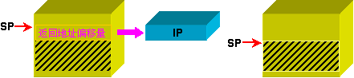
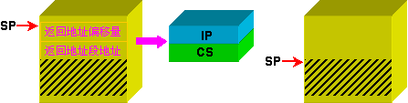
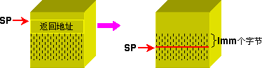

当子程序执行完时，需要返回到调用它的程序之中。为实现此功能，指令系统提供了一条专用的返回指令。其格式如下：
RET/RETN/RETF [Imm]
子程序的返回在功能上是子程序调用的逆操作。为了与子程序的远、近调用相对应，子程序的返回也分：远返回和近返回。返回指令在堆栈操作方面是调用指令的逆过程(如图7.3所示)。其具体规定如下：


如果返回指令后面带有立即数(其值通常为偶数)，则表示在得到返回地址之后，SP还要增加的偏移量，它不是类似于高级语言中子程序的返回值(如图7.5所示)。

在MASM 5.0及其以后版本中，可用指令RETN或RETF来显式地告诉汇编程序是本子程序的返回是近返回，还是远返回。
例如：
RET ;可能是近返回，也可能是远返回
RETN ;近返回指令
RETF ;远返回指令
RET 6 ;子程序返回后，(SP)←(SP) + 6
解：
;子程序功能：把AL中存放的字符变大写 ;入口参数：AL ;出口参数：AL ;算法描述：判断AL中字符必须在'a'~'z'之间才能把该字符变为大写 UPPER PROC CMP AL, 'a' ;书写'a'的ASCII码61H也可以 JB over CMP AL, 'z' JA over SUB AL, 20H ;书写指令AND AL, 0DFH也可以 over: RET UPPER ENDP
解：
;子程序功能：求字符串的长度 ;入口参数：DS:DX存放字符串的首地址，该字符串以0为结束标志 ;出口参数：CX存放该字符串的长度 ;算法描述：用BX来指针来扫描字符串中的字符，如果遇到其结束标志，则停止扫描字符串操作 StrLen PROC PUSH AX PUSH BX ;用堆栈来保存子程序所用到的寄存器内容 XOR CX, CX XOR AL, AL MOV BX, DX again: CMP [BX], AL JZ over INC CX ;增加字符串的长度 INC BX ;访问字符串的指针向后移 JMP again over: POP BX ;恢复在子程序开始时所保存的寄存器内容 POP AX RET StrLen ENDP